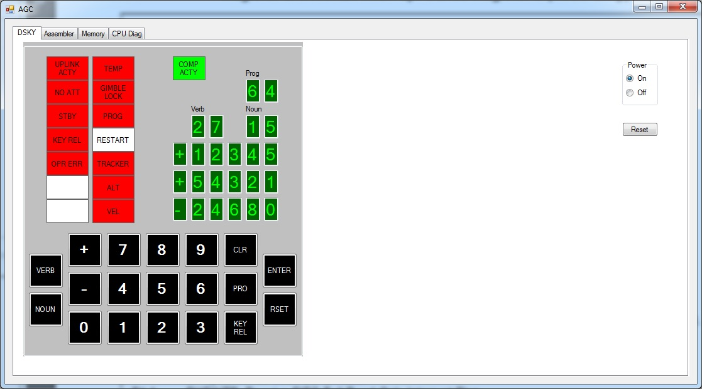
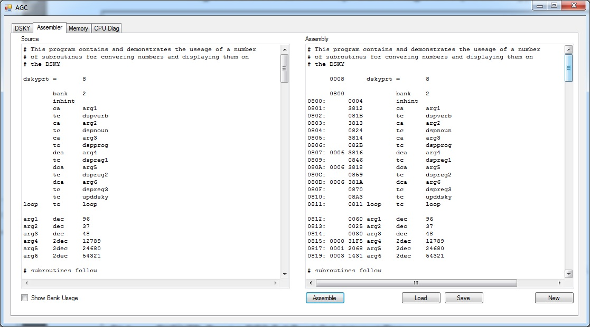
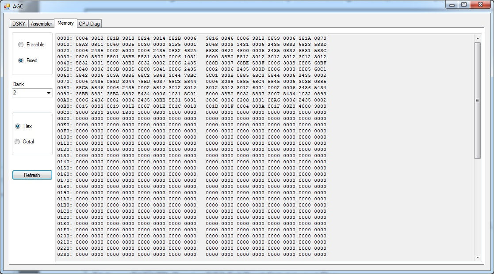
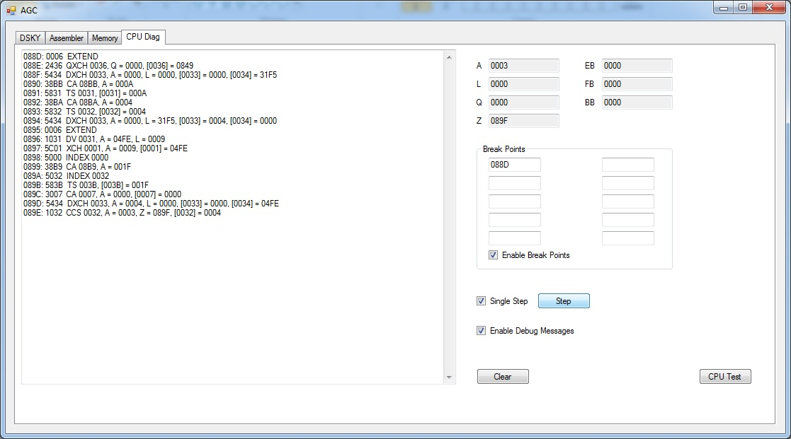

This simulator is not meant to simulate the AGC as it was used on Apollo,
Therefore this simulation does not include any of the other Apollo hardware
that was connected to the AGC, nor does it include any of the flight software.
For those interested in how the AGC was used on Apollo there is an excellent
simulator (including flight software) at the Virtual AGC project:
(http://www.ibiblio.org/apollo/)
The AGC was one of the earliest computers to be built using integrated
circuit (IC) technology. As a result a lot of computing power was packed
into a case measuring only 24 x 12.5 x 6.5 inches, weighing around 70 pounds.
The AGC consisted of 2048 words of erasable (RAM) memory and 36864 words of
fixed (ROM) each of which contained 16 bits. The AGC operated at a clock
frequency of 2.048mhz.
This simulator is meant to allow you to explore how this particular computer
worked and what could be done with it besides flying to the moon. This
program simulates the block II AGC as well as the DSKY that was the user
interface to the AGC. The simulator includes an integrated assembler to help
the user in writing software for this machine.
Note: This program requires .net 4.0 framework to be installed
Virtual AGC Lots of information on the AGC and how it was used on Apollo



